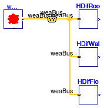

Collection of models that illustrate model use and test models
Information
This package contains examples for the use of models that can be found in
Buildings.BoundaryConditions.SolarIrradiation.
Extends from Modelica.Icons.ExamplesPackage (Icon for packages containing runnable examples).
Package Content
| Name |
Description |
 DiffuseIsotropic DiffuseIsotropic
|
Test model for diffuse solar irradiation on a tilted surface using the isotropic model |
 DiffusePerez DiffusePerez
|
Test model for diffuse solar irradiation on a tilted surface using the Perez model |
 DirectTiltedSurface DirectTiltedSurface
|
Test model for direct solar irradiation on a tilted surface |
Test model for diffuse solar irradiation on a tilted surface using the isotropic model

Information
This example computes the hemispherical diffuse irradiation
on a roof, wall and a floor, using an isotropic sky model.
Since the floor only sees the ground,
it receives the lowest amount of diffuse solar irradiation.
Extends from Modelica.Icons.Example (Icon for runnable examples).
Parameters
| Type | Name | Default | Description |
|---|
| Real | rho | 0.2 | Ground reflectance |
Connectors
| Type | Name | Description |
|---|
| Bus | weaBus | Weather data bus |
Modelica definition
Test model for diffuse solar irradiation on a tilted surface using the Perez model

Information
This model tests the implementation of Perez' model for diffuse solar radiation.
The three instances of Perez' model compute the diffuse solar
irradiation on a roof, a wall and a floor.
Since the floor only sees the ground but not the radiative heat flow that is
scattered in the atmosphere, it receives the lowest amount of
diffuse solar irradiation.
Extends from Modelica.Icons.Example (Icon for runnable examples).
Parameters
| Type | Name | Default | Description |
|---|
| Angle | lat | 37/180*Modelica.Constants.pi | Latitude [rad] |
| Angle | azi | 0.3 | Azi angle [rad] |
| Angle | til | 0.5 | Tilted angle [rad] |
Connectors
| Type | Name | Description |
|---|
| Bus | weaBus | |
Modelica definition
model DiffusePerez
"Test model for diffuse solar irradiation on a tilted surface using the Perez model"
extends Modelica.Icons.Example;
parameter Modelica.SIunits.Angle lat=37/180*Modelica.Constants.pi
"Latitude";
parameter Modelica.SIunits.Angle azi=0.3
"Azi angle";
parameter Modelica.SIunits.Angle til=0.5
"Tilted angle";
Buildings.BoundaryConditions.WeatherData.ReaderTMY3 weaDat(filNam=
"modelica://Buildings/Resources/weatherdata/USA_CA_San.Francisco.Intl.AP.724940_TMY3.mos");
Buildings.BoundaryConditions.WeatherData.Bus weaBus;
Buildings.BoundaryConditions.SolarIrradiation.DiffusePerez HDifRoo(
til=Buildings.Types.Tilt.Ceiling,
lat=0.6457718232379,
azi=0.78539816339745)
"Diffuse irradiation on roof";
Buildings.BoundaryConditions.SolarIrradiation.DiffusePerez HDifFlo(
til=Buildings.Types.Tilt.Floor,
lat=0.6457718232379,
azi=0.78539816339745)
"Diffuse irradiation on floor";
Buildings.BoundaryConditions.SolarIrradiation.DiffusePerez HDifWal(
til=Buildings.Types.Tilt.Wall,
lat=0.6457718232379,
azi=0.78539816339745)
"Diffuse irradiation on wall";
equation
connect(weaDat.weaBus, weaBus);
connect(weaBus,HDifRoo. weaBus);
connect(weaBus, HDifFlo.weaBus);
connect(weaBus, HDifWal.weaBus);
end DiffusePerez;
Test model for direct solar irradiation on a tilted surface

Information
This model tests the direct solar irradiation received on a ceiling, a wall and a floor.
The assert statement will stop the simulation if the floor receives
any direct solar irradiation.
Extends from Modelica.Icons.Example (Icon for runnable examples).
Parameters
| Type | Name | Default | Description |
|---|
| Angle | lat | 37/180*Modelica.Constants.pi | Latitude [rad] |
Modelica definition
model DirectTiltedSurface
"Test model for direct solar irradiation on a tilted surface"
extends Modelica.Icons.Example;
parameter Modelica.SIunits.Angle lat=37/180*Modelica.Constants.pi
"Latitude";
Buildings.BoundaryConditions.WeatherData.ReaderTMY3 weaDat(filNam=
"modelica://Buildings/Resources/weatherdata/USA_IL_Chicago-OHare.Intl.AP.725300_TMY3.mos");
Buildings.BoundaryConditions.SolarIrradiation.DirectTiltedSurface HDirRoo(
til=Buildings.Types.Tilt.Ceiling,
lat=0.6457718232379,
azi=0.78539816339745)
"Direct irradiation on roof";
Buildings.BoundaryConditions.SolarIrradiation.DirectTiltedSurface HDirFlo(
til=Buildings.Types.Tilt.Floor,
lat=0.6457718232379,
azi=0.78539816339745)
"Direct irradiation on floor";
Buildings.BoundaryConditions.SolarIrradiation.DirectTiltedSurface HDirWal(
til=Buildings.Types.Tilt.Wall,
lat=0.6457718232379,
azi=0.78539816339745)
"Direct irradiation on wall";
Buildings.Utilities.Diagnostics.AssertEquality assEqu
"Assert to ensure that direct radiation received by floor construction is zero";
Modelica.Blocks.Sources.Constant const(k=0)
"Block that outputs zero";
equation
connect(assEqu.u1, HDirFlo.H);
connect(const.y, assEqu.u2);
connect(weaDat.weaBus, HDirRoo.weaBus);
connect(HDirWal.weaBus, weaDat.weaBus);
connect(HDirFlo.weaBus, weaDat.weaBus);
end DirectTiltedSurface;
Automatically generated Mon Jul 13 14:22:15 2015.
 Buildings.BoundaryConditions.SolarIrradiation.Examples.DiffuseIsotropic
Buildings.BoundaryConditions.SolarIrradiation.Examples.DiffuseIsotropic Buildings.BoundaryConditions.SolarIrradiation.Examples.DiffusePerez
Buildings.BoundaryConditions.SolarIrradiation.Examples.DiffusePerez Buildings.BoundaryConditions.SolarIrradiation.Examples.DirectTiltedSurface
Buildings.BoundaryConditions.SolarIrradiation.Examples.DirectTiltedSurface